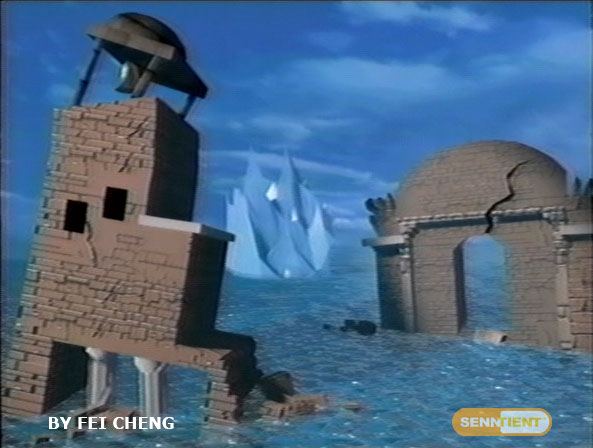
Something we take for granted these days is 3D. You see it everywhere, CG animaion in movies has become so normal, it looks basically real. Disney can create entire films in only months. And yes, games today are usually made on a big open 3D playing field. But it wasn't always this way.
In the late 90's and early 2000's, 3D digital animation was still in it's infancy. Rendering a room with a three dimmensional character, rigging said character to preform an action. It used to be something that would need excessive ammounts of ram, and take days at a time. Now think about how hard this process must have been for a character you can take control of! 2D had it's own limitations, but each of those limitations, especially movement, are completely revoked when 3D is added, and total control is given.
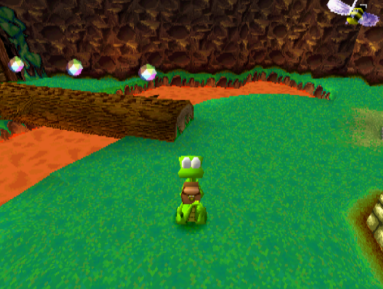
That's another thing, control. It was a long, arduous process trying to learn how games would control in 3D. This transitioning point is something that I would argue is still one of the biggest events in gaming history. Needless to say, it was a lot of trial and error. Some games implimented what we call "tank controls". Instead of full movement, tank controls has it so your character can only move in the direction their facing. With your left and right movement being turning, and backwards has you reversing like a car does. Imagine trying to play your favorite 3D game with a limited control scheme like this!
Another feature that required lots of thought was the camera. If the player is in complete control of what they can see, how do you control the game to still show the player what you want? How do you make sure the game only loads what it needs to? These and much more are the questions that were asked many times, as game developers struggled to find the perfect formula with their creations. Today we have programs that generate fields, and give us pre-set assets to work with. The developers of yesterday didn't have that luxury though.
After lots and lots of trial and error, the answer to most of these questions came in a revolutionary video game. One still talked about and played to this day.
Super Mario 64
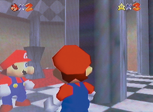
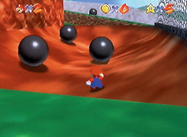
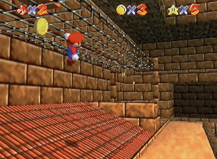
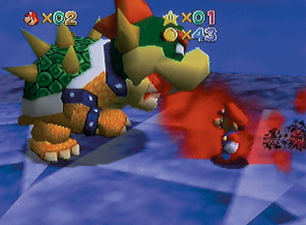
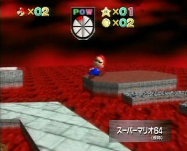 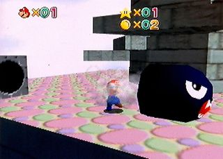 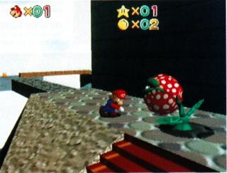 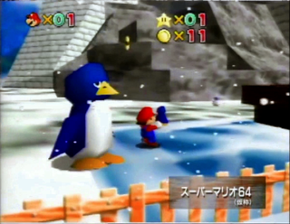
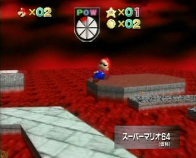 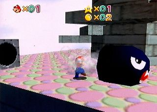 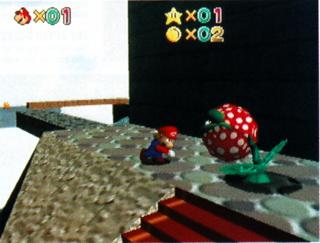 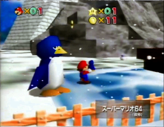
"Super Mario 64", released on the Nintendo 64, is perhaps one of the most influential video games in the world. In a time where 3D in gaming was a complex and new concept, Nintendo's flagship franchise releases a game that, for it's time, perfectly handled nearly every situation 3D games had been haulted by. The player could move Mario in any direction they desire. Control the camera with new buttons made specifically for it, and platform with a completely new moveset, to explore the expanding words Mario 64 brought to the table.
From then on, Mario 64 was used as a template of sorts for other games of it's genre. Wether it be it's physics, design, or structure, the game inspired many future products to come, and it arguably still is today.
But how did they do it? Well, it all comes down to the controller of the Nintendo 64 console. Before this innovative control scheme came into light, movement was often controlled with what was called a "D-Pad", short for Directional Pad. A D-Pad usually had 4 buttons, up, down, left, and right.
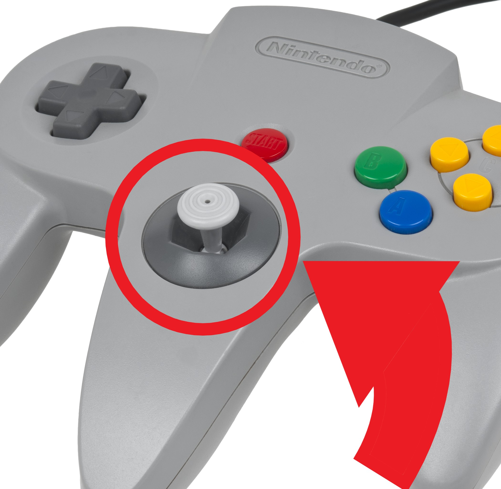